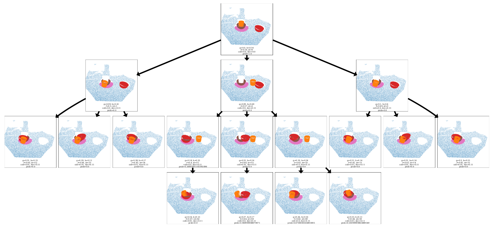
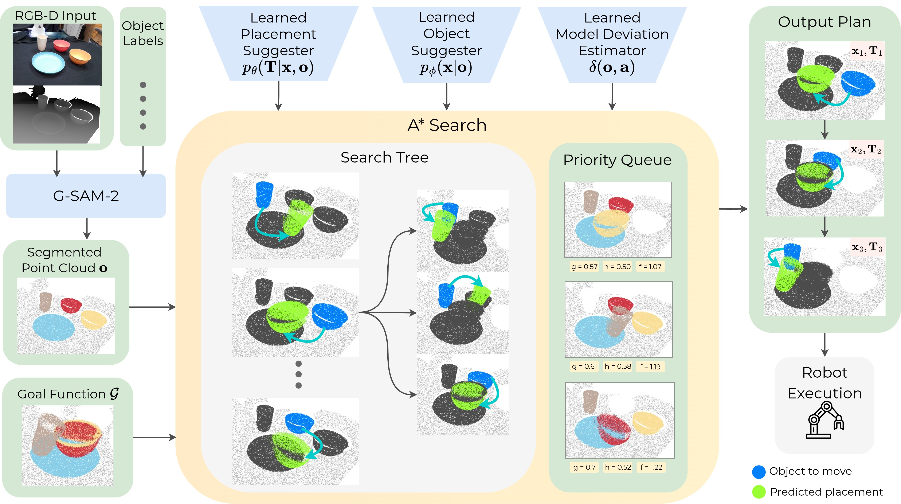
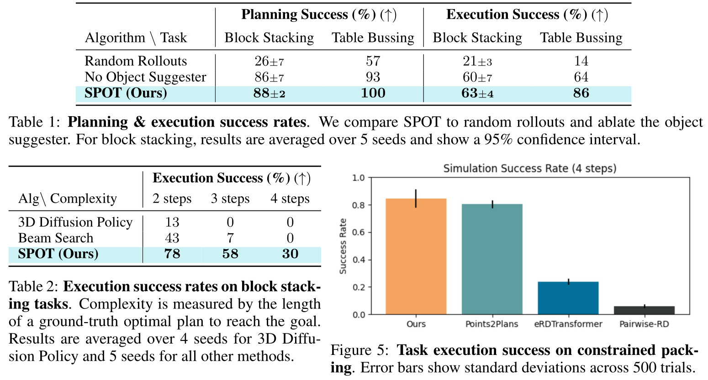

Planning from Point Clouds
over Continuous Actions for Multi-object Rearrangement
Ben Eisner1 Maxim Likhachev1 David Held1
*Equal Contribution
(All real robot execution videos on this website are at 5x the speed of actual execution)
Abstract
Long-horizon planning for robot manipulation is a challenging problem that requires reasoning about the effects of a sequence of actions on a physical 3D scene. While traditional task planning methods are shown to be effective for long-horizon manipulation, they require discretizing the continuous state and action space into symbolic descriptions of objects, object relationships, and actions. Instead, we propose a hybrid learning-and-planning approach that leverages learned models as domain-specific priors to guide search in high-dimensional continuous action spaces. We introduce SPOT: Search over Point cloud Object Transformations, which plans by searching for a sequence of transformations from an initial scene point cloud to a goal-satisfying point cloud. SPOT samples candidate actions from learned suggesters that operate on partially observed point clouds, eliminating the need to discretize actions or object relationships. We evaluate SPOT on multi-object rearrangement tasks, reporting task planning success and task execution success in both simulation and real-world environments. Our experiments show that SPOT generates successful plans and outperforms a policy-learning approach. We also perform ablations that highlight the importance of search-based planning.
Select the configuration you want to rearrange:
SPOT: Search over Point Cloud Object Transformations
SPOT solves multi-object rearrangement tasks by planning directly in point cloud space, without relying on privileged information such as ground-truth object states. It performs A* search over object-wise SE(3) transformations, expanding nodes by sampling actions from learned suggesters that serve as domain-specific priors.
Plan Graph Visualization
Shown below is a visualization of the plan graph for a table bussing task. Each node is a point cloud with cost and heuristic values, expanded using SE(3) transformations from the learned suggesters. A* finds multimodal solutions: one plan moves the cup aside, stacks the bowls, then returns the cup (3 steps), while another places the cup next to the plate, enabling direct stacking (2 steps). High-collision plans are pruned.

Method Breakdown:
1. Learned Suggesters
To efficiently guide search over continuous state-action transitions, SPOT leverages
an object suggester and a placement suggester to answer two high-level questions: (1) Which object should be moved?
(2) Where should the object be moved to?
Both the suggesters operate on a segmented point cloud observation of the scene.
- Object Suggester: Predicts a probability distribution over the objects in the scene that can feasibly be moved. We sample from this distribution to select an object to move.
- Placement Suggester: Samples potential transformations for that object of where it might be moved next. It generates diverse transformations by iteratively rescoring its latent distribution.
- Model Deviation Estimator (MDE): Guides search towards actions that are more physically plausible, by estimating the deviation between the expected and true state.
2. Guided A* Search
Our method takes as input an RGB-D image, object names, and a goal function. From a segmented point cloud, A* search plans over the space of SE(3) transformations applied to object point clouds until a goal-satisfying configuration is reached. Node expansion samples actions in the form of (1) an object to move and (2) its placement, from the learned suggesters. The cost function for search combines action cost, collision cost, deviation cost from the model deviation estimator (MDE), and probability cost. The resulting plan is then given to a robot for execution.

3. Data Collection
We train our suggesters using goal-agnostic, but domain-specific human demonstration videos.
We use Grounded Segment Anything
to segment out each object in the video. Then,
using CoTracker3, we extract 2D tracks across video
frames for each object in the scene. By applying a threshold to the 2D tracks, we identify stationary periods and movement periods for each
object in the scene, shown in the graphs below. Assuming that every object moves independently of the other objects, we deter-
mine the order of object movements. For each detected movement, RANSAC-based SVD computes
the best rigid transformation (4×4 matrices) between stationary states of each object. The output is
a sequence of transformations and point clouds describing how objects were manipulated, as shown below.
See this repository for implementation.
Planning and Execution Success Rates
- SPOT outperforms Beam Search with a beam width of 1, highlighting the advantage of using A* search for planning.
- SPOT outperforms random rollouts (which expand a large number of nodes), demonstrating the importance of guided search toward the goal.
- SPOT performs better with the object suggester than with uniform object sampling, showing the value of the object suggester as a domain-specific prior.
- SPOT achieves performance comparable to Points2Plans and surpasses eRDTransformer and Pairwise-RD, even though we do not use relational state abstractions or symbolic scene representations. We also plan in the point cloud space instead of the latent space.
- SPOT outperforms 3D Diffusion Policy (trained on the same data) on long-horizon tasks, demonstrating long-horizon generalization.

Qualitative Analysis: Long-Horizon Planning
We compare the execution performance of our method to 3D Diffusion Policy (DP3), an end-to-end imitation learning policy. Our DP3 baseline is trained on a dataset of 23 task-specific demonstrations of a simulation block stacking task provided by a human expert. All of the demonstrations lead to a single consistent goal configuration since DP3 is not goal-conditioned. As shown below, although DP3 achieves some success on 2-step tasks, it is unable to complete any 3 or 4-step tasks. This demonstrates that policy learning used directly can have compounding errors in long-horizon tasks, whereas search-based planning guided by learned modules can generalize to longer horizons. See Table 2 in our paper for success rates.
Qualitative Analysis: Out-performing Human Demonstrations
Our method can often complete the task more efficiently than the human demonstrations, since our learned object and placement suggesters capture a goal-agnostic distribution of relevant objects and placements. By sampling from this distribution, our approach explores different possible solutions using search-based planning, allowing it to find shorter and more effective paths to the goal, compared to the human demonstration.
Acknowledgements
This material is based upon work supported by ONR MURI N00014-24-1-2748 and by the Toyota Research Institute. Any opinions, findings, and conclusions or recommendations expressed in this material are those of the author(s) and do not necessarily reflect the views of the Office of Naval Research or Toyota Research Institute. We also thank the members of the R-PAD Lab and SBPL for helpful discussions and constructive feedback on this project.

BibTeX
@inproceedings{saha2025planning,
title={Planning from Point Clouds over Continuous Actions for Multi-object Rearrangement},
author={Saha, Kallol and Li, Amber and Rodriguez-Izquierdo, Angela and Yu, Lifan and Eisner, Ben and Likhachev, Maxim and Held, David},
booktitle={Conference on Robot Learning (CoRL)},
year={2025}
}